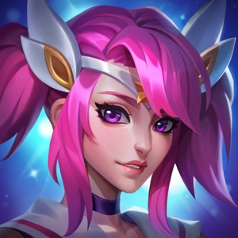
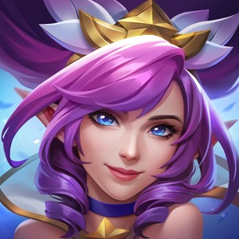
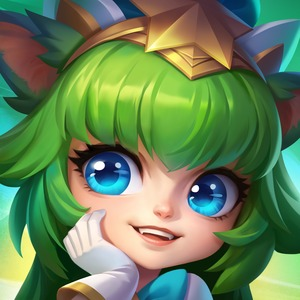
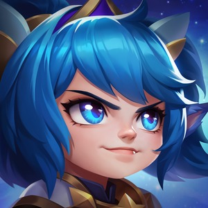

Star Guardian Lux: The captain of her Star Guardian team. She is cheerful, courageous, and a little clumsy.

Star Guardian Janna: A veteran Guardian who is the wisest of her team. She is distant and quiet.

Star Guardian Lulu: The youngest Guardian of her team. She is odd and has a unique relationship with the Starlight.

Star Guardian Poppy: The most serous Guardian of her team. She views everything in black or white.